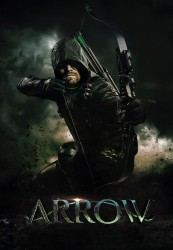

")
 
 IMDB-Wertung: 7.7 / 10
IMDB-Wertung: 7.7 / 10  Metascore:
Metascore: 
Nach fünf Jahren auf einer einsamen Insel kehrt der Milliardär Oliver Queen nach Starling City zurück. Oliver strandete nach einem Schiffsunglück auf einer einsamen Insel und wurde für tot gehalten. Schnell wird der Familie und den Freunden klar, dass sich Oliver sehr verändert hat. Doch dieser schweigt und entschuldigt sich für die Fehler der Vergangenheit. Er versöhnt sich sogar mit seiner Ex-Freundin Laurel, die nun als Anwältin gegen das zunehmende Unrecht in Starling City kämpft, will sie jedoch zunächst nicht mehr in seinem Leben haben. Die fünf Jahre auf der Insel haben ihn abgehärtet und zu einer Waffe gemacht. Um dies zu schaffen ohne seine Nächsten zu gefährden, lebt er ein geheimes Doppelleben: Tagsüber der Playboy, der er noch vor seinem Aufenthalt auf der Insel war, Abends verwandelt er sich in Arrow.
S01-S05 complete
Jahr: 2012
Dauer: 42 Minuten
FSK: 12
Land: USA Studio: The CWTonspuren: DD5.1 - ,
Untertitel: Deutsch,
Auflösung: 720p (1280x720) Größe: 158720 MB
Genre: Action, Drama, Sci-Fi, Abenteuer, Krimi, Mystery, TV-Serie
Regisseur: John Behring, James Bamford, Michael Schultz, Wendey Stanzler, Glen Winter
Drehbuch: Greg Berlanti, Marc Guggenheim, Andrew Kreisberg, Beth Schwartz, Brian Ford Sullivan
Soundtrack:
Darsteller:
 Emily Bett Rickards als Felicity Smoak
Emily Bett Rickards als Felicity Smoak Neal McDonough als Damien Darhk
Neal McDonough als Damien Darhk Colin Salmon als Walter Steele
Colin Salmon als Walter Steele Byron Mann als Yao Fei
Byron Mann als Yao Fei Kelly Hu als China White
Kelly Hu als China White David Nykl als Anatoly Knyazev
David Nykl als Anatoly Knyazev Jesse Hutch als Officer Daily
Jesse Hutch als Officer Daily Ryan Robbins als Conklin
Ryan Robbins als Conklin Chelah Horsdal als Kate Spencer
Chelah Horsdal als Kate Spencer Jamey Sheridan als Robert Queen
Jamey Sheridan als Robert QueenDatei: X:\Comic-Serien\Arrow\Arrow S01\Arrow s01e01 Die Rückkehr.mkv seit 25.11.2015
Festplatte: Comicverfilmungen+MusikCD
 Es gibt insgesamt 34 Filme in der Gruppe 'Comic-Serien'
Es gibt insgesamt 34 Filme in der Gruppe 'Comic-Serien'